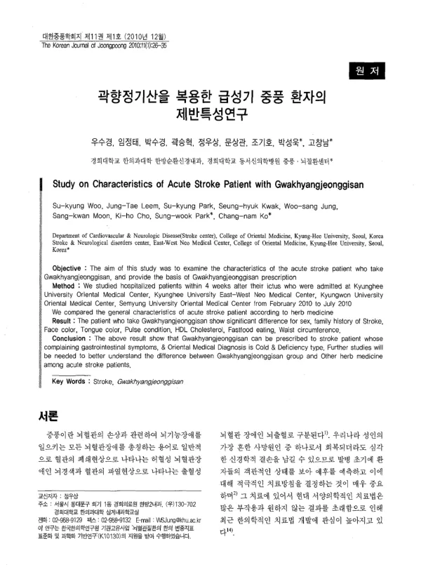

곽향정기산을 복용한 급성기 중풍 환자의 제반특성연구
Woo Sk, Leem Jt, Park Sk, Kwak Sh, Jung Ws, Moon Sk, Cho Kh, Park Sw, Ko Cn
The Korean Journal of Joongpoong 11(1):26-35

첫 장 · 오픈액세스First page · open access
논문 소개Summary
같은 연속 연구의 셋째 편으로, 급성기 중풍으로 입원해 곽향정기산을 복용한 환자들의 특성을 본 연구입니다. 2010년 2월부터 7월까지 네 기관에 발병 4주 안에 입원한 환자를 모아 처방별로 견주었습니다. 곽향정기산군은 성별과 중풍 가족력, 얼굴색, 설색, 맥상, HDL 콜레스테롤, 패스트푸드 섭취, 허리둘레에서 차이를 보였습니다. 저자들은 소화기 증상을 호소하고 변증이 한증·허증인 환자에게 이 처방을 쓸 수 있다고 보았습니다. 앞선 두 편이 열증 쪽 처방을 다룬 것과 짝을 이루어, 같은 코호트를 처방의 성질에 따라 갈라 본 셈입니다.
The third paper in the same series, on acute stroke inpatients given Gwakhyangjeonggisan. Patients admitted within four weeks of onset to the four hospitals between February and July 2010 were compared by prescription. The Gwakhyangjeonggisan group differed in sex, family history of stroke, facial colour, tongue colour, pulse condition, HDL cholesterol, fast-food intake and waist circumference. The authors concluded that the prescription suits patients reporting gastrointestinal symptoms whose pattern is a cold and deficiency type. Paired with the two preceding papers, which dealt with heat-type prescriptions, it amounts to splitting one cohort according to the nature of the prescription given.
인용Cite
Woo Sk, Leem Jt, Park Sk, Kwak Sh, Jung Ws, Moon Sk, Cho Kh, Park Sw, Ko Cn. 곽향정기산을 복용한 급성기 중풍 환자의 제반특성연구. The Korean Journal of Joongpoong. 2010;11(1):26-35.